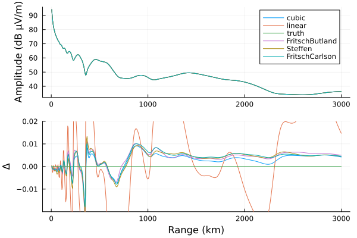
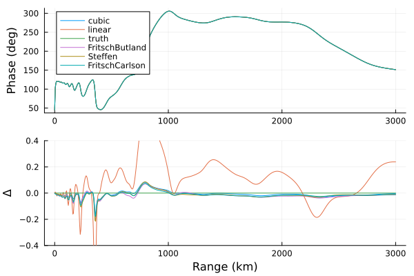

Density and collision frequency as interpolating functions
The ionospheric Species type used when defining a HomogeneousWaveguide requires numberdensity and collisionfrequency fields to be callable functions of altitude z in meters that return Float64 values of number density in m⁻³ and species-neutral collision frequency in s⁻¹.
Sometimes a simple analytical function can be provided, such as waitprofile. Other times, the profile is constructed from tabular data at discrete heights which must be wrapped in an interpolator before being passed to Species.
The choice of interpolating function not only impacts the accuracy of the propagation result (how well the interpolation resembles the true profile), but it can also impact the runtime of propagate and related functions.
In this example we'll compare a few different interpolating functions.
Profiles and interpolators
We'll use the FIRI-2018 profiles from FaradayInternationalReferenceIonosphere.jl which are slightly more complicated than a pure exponential profile. The package isn't registered, but can be installed from the Pkg by copy-pasting the entire url.
From Interpolations.jl we'll use a linear interpolator, a cubic spline interpolator, and monotonic interpolators. We'll use NormalHermiteSplines.jl to construct Hermite splines.
using Printf, Statistics
using LongwaveModePropagator
using LongwaveModePropagator: QE, ME
using Plots, Distances
using FaradayInternationalReferenceIonosphere
using Interpolations, NormalHermiteSplines
const FIRI = FaradayInternationalReferenceIonosphereFaradayInternationalReferenceIonosphereHere's the discrete profile data. Some interpolators will benefit from random sample points, but most density data will be on a grid. The profile uses an exponential extrapolation of the base of FIRI from about 60 km altitude down to the ground.
zs = 0:1e3:110e3
Ne = FIRI.extrapolate(firi(50, 30), zs);Let's construct the interpolators.
linear_itp = linear_interpolation(zs, Ne)
cubic_itp = cubic_spline_interpolation(zs, Ne);There's not great documentation on the monotonic interpolators of Interpolations.jl as of v0.13, but several are supported.
fb_itp = Interpolations.interpolate(zs, Ne, FritschButlandMonotonicInterpolation())
fc_itp = Interpolations.interpolate(zs, Ne, FritschCarlsonMonotonicInterpolation())
s_itp = Interpolations.interpolate(zs, Ne, SteffenMonotonicInterpolation());And the Hermite splines
spline = prepare(collect(zs), RK_H1())
spline = construct(spline, Ne)
hermite_itp(z) = evaluate_one(spline, z);(a spline built with RKH0 kernel is a continuous function, a spline built with RKH1 kernel is a continuously differentiable function, a spline built with RK_H2 kernel is a twice continuously differentiable function).
zs_fine = 40e3:100:110e3
Ne_fine = FIRI.extrapolate(firi(50, 30), zs_fine);
linear_fine = linear_itp.(zs_fine)
cubic_fine = cubic_itp.(zs_fine)
fb_fine = fb_itp.(zs_fine)
fc_fine = fc_itp.(zs_fine)
s_fine = s_itp.(zs_fine)
hermite_fine = hermite_itp.(zs_fine);The profiles are compared using percentage difference relative to the true profile.
cmp(a,b) = (a - b)/b*100
dNe = cmp.(Ne_fine, Ne_fine)
dlinear = cmp.(linear_fine, Ne_fine)
dcubic = cmp.(cubic_fine, Ne_fine)
dfb = cmp.(fb_fine, Ne_fine)
dfc = cmp.(fc_fine, Ne_fine)
ds = cmp.(s_fine, Ne_fine)
dhermite = cmp.(hermite_fine, Ne_fine);To plot densities with a log scale, we set values less than 0.1 to NaN.
cl(x) = replace(v->v <= 0.1 ? NaN : v, x)
lc(x) = replace(x, NaN => 0)
p1 = plot(cl([Ne_fine linear_fine cubic_fine hermite_fine fb_fine fc_fine s_fine]),
zs_fine/1000, xscale=:log10, xlabel="Ne (m⁻³)", ylabel="Altitude (km)",
legend=:topleft, labels=["Truth" "Linear" "Cubic" "Hermite" "FritschButland" "FritschCarlson" "Steffen"])
p2 = plot(lc([dNe dlinear dcubic dhermite dfb dfc ds]),
zs_fine/1000, xlabel="% difference", legend=false, xlims=(-1, 1))
plot(p1, p2, layout=(1,2), size=(800,400), margin=3Plots.mm)Unsurprisingly, the error is highest at the cutoff altitude of 40 km where the densities below are 0. The linear interpolation has positive-biased errors at all other heights because linear interpolation does not accurately capture the true exponential profile. To avoid this, the interpolator could have been constructed with a finer initial grid, but that is not always possible.
Let's compute the total absolute difference between each interpolator and the truth and also compute the average percentage difference for each:
for (n, v) in ("linear"=>(linear_fine, dlinear), "cubic"=>(cubic_fine, dcubic),
"hermite"=>(hermite_fine, dhermite), "FritschButland"=>(fb_fine, dfb),
"FritschCarlson"=>(fc_fine, dfc), "Steffen"=>(s_fine, ds))
@printf("%s: %.3g %.3g\n", n, cityblock(Ne_fine, v[1]), mean(abs, v[2]))
endlinear: 1.54e+10 0.459
cubic: 1.73e+10 0.14
hermite: 1.73e+10 0.14
FritschButland: 1.64e+10 0.129
FritschCarlson: 1.66e+10 0.14
Steffen: 1.66e+10 0.14Somewhat surprisingly, the linear interpolation has the lowest total absolute difference from the truth despite the fact that (as seen in the plot) the percentile difference from the linear interpolation to the truth is very high.
Propagation results
Let's compare propagation results and performance with each of these interpolators. Unfortunately, as of v0.5.1 of NormalHermiteSplines.jl, the implementation of the package isn't efficient (see #3)[https://github.com/IgorKohan/NormalHermiteSplines.jl/issues/3] and because hermite_itp would be called millions of times in propagate, it is prohibitively slow.
Here are the Species for each of the other interpolators. They will all use the analytic electroncollisionfrequency.
There's no functional form of the truth FIRI profile, so we'll build a fine FritschButland interpolator and call it the truth.
interpolators = (
"truth" => Interpolations.interpolate(0:100:110e3,
FIRI.extrapolate(firi(50, 30), 0:100:110e3),
FritschButlandMonotonicInterpolation()),
"linear"=> linear_itp,
"cubic" => cubic_itp,
"FritschButland" => fb_itp,
"FritschCarlson" => fc_itp,
"Steffen" => s_itp
)
function propagateitp(interpolators)
bfield = BField(50e-6, deg2rad(68), deg2rad(111))
ground = GROUND[5]
tx = Transmitter(24e3)
rx = GroundSampler(0:5e3:3000e3, Fields.Ez)
results = Dict{String,Tuple{Float64,Vector{Float64},Vector{Float64}}}()
for (n, itp) in interpolators
species = Species(QE, ME, itp, electroncollisionfrequency)
waveguide = HomogeneousWaveguide(bfield, species, ground)
t0 = time()
_, amp, phase = propagate(waveguide, tx, rx)
runtime = time() - t0
results[n] = (runtime, amp, phase)
end
return results
end
propagateitp(interpolators); # warmup
results = propagateitp(interpolators);First let's evaluate the propagation results.
d = 0:5:3000
p1 = plot(ylabel="Amplitude (dB μV/m)")
p2 = plot(xlabel="Range (km)", ylims=(-0.02, 0.02), ylabel="Δ", legend=false)
for (n, v) in results
plot!(p1, d, v[2], label=n)
plot!(p2, d, v[2]-results["truth"][2])
end
plot(p1, p2, layout=grid(2,1,heights=[0.7, 0.3]))
p1 = plot(ylabel="Phase (deg)")
p2 = plot(xlabel="Range (km)", ylims=(-0.4, 0.4), ylabel="Δ", legend=false)
for (n, v) in results
plot!(p1, d, rad2deg.(v[3]), label=n)
plot!(p2, d, rad2deg.(v[3])-rad2deg.(results["truth"][3]))
end
plot(p1, p2, layout=grid(2,1,heights=[0.7, 0.3]))
Here is the mean absolute amplitude difference between each technique and the true profile amplitude:
for n in ("linear", "cubic", "FritschButland", "FritschCarlson", "Steffen")
@printf("%s: %.3e\n",n, meanad(results[n][2], results["truth"][2]))
endlinear: 1.750e-02
cubic: 4.246e-03
FritschButland: 4.092e-03
FritschCarlson: 4.147e-03
Steffen: 4.239e-03The amplitude and phase for each of the interpolators matches the true exponential profile extremely closely relative to the typical noise of real VLF measurements.
Timing can vary when run by GitHub to build the documentation, so results here are from a local run:
| Interpolator | Runtime relative to truth |
|---|---|
| truth | 1 |
| linear | 0.99 |
| cubic | 0.84 |
| FritschButland | 0.94 |
| FritschCarlson | 0.96 |
| Steffen | 0.95 |
Really, any of these except for the linear interpolation could be used to interpolate a discrete profile. The cubic interpolation is the fastest, but the FritschButland is a little more true to the actual profile. It's for that reason that FritschButland is used to interpolate TableInput types in LongwaveModePropagator.
This page was generated using Literate.jl.